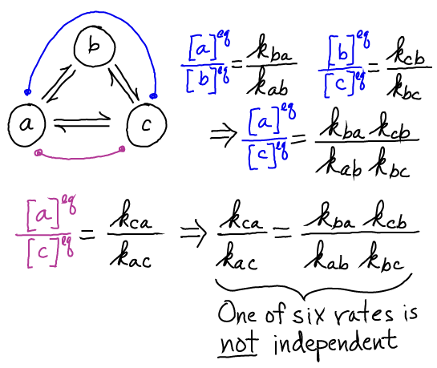

$
\newcommand{\conc}[1]{[\mathrm{#1}]}
\newcommand{\conceq}[1]{[\mathrm{#1}]^{\mathrm{eq}}}
\newcommand{\kcat}{k_{\mathrm{cat}}}
\newcommand{\kdt}{k_{\mathrm{dt}}}
\newcommand{\kdtsol}{k^{\mathrm{sol}}_{\mathrm{dt}}}
\newcommand{\kkeq}{K^{\mathrm{eq}}}
\newcommand{\kmmon}{\kon^{\mathrm{ES}}}
\newcommand{\kmmoff}{\koff^{\mathrm{ES}}}
\newcommand{\kconf}{k_{\mathrm{conf}}}
\newcommand{\koff}{k_{\mathrm{off}}}
\newcommand{\kon}{k_{\mathrm{on}}}
\newcommand{\ktd}{k_{\mathrm{td}}}
\newcommand{\ktdsol}{k^{\mathrm{sol}}_{\mathrm{td}}}
\newcommand{\ss}{\mathrm{SS}}
$
Cycles: The Cell's Working Units
A cycle is a series of states, connected by transitions, in which the first and last state are the same.
- Because the cell re-uses its materials (proteins, poly-nucleic acids, and molecular building blocks), cycles arise naturally. Accordingly, ycles describe almost all catalytic activity, signalling and molecular machines.
- Although all molecular processes are reversible, the cell functions by driving processes in one direction in order to ensure "processivity" (moving with high probability in a single direction).
- The phosphorylation cycle below, driven by the relatively high ratio of [ATP] to [ADP] (compared to equilibrium) is typical.
Binding processes provide "handles" for driving cycles
As sketched below, and discussed in detail in Cycle Logic, a cycle without binding cannot be forced to move consistently in a desired direction.
The Michaelis-Menten cycle on the right typically is driven clockwise by an excess of substrate (compared to equilibrium) but it equally well could be driven in the other direction with an excess of product.
Cycles impose constaints on rates
Because correct models must be consistent with the principle of detailed balance, not all rate constants in a model are independent.
This fact can prevent (some) mistakes in model construction.

This same principle can be used to correct - fully specify - the Michaelis-Menten model.
The needed constraint on the rates can be obtained by solving for the equilibrium ratio [ES]/[EP] in two ways:
Equating the two results for $\conceq{ES} / \conceq{EP}$ yields
Noting that $\conceq{S} / \conceq{P}$ is a constant determined by the chemistry (relative stability) of the two compounds independent of the catalytic process or model rates, indicates that the preceding result is indeed a constraint on the rate constants of the model.
Only five of the six rates are independent.
More on cycles
To learn more about cycles in a qualitative way, visit the Cycle Logic page.